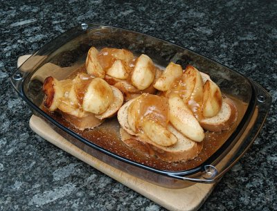

| Zutaten für 4 Personen: | |
| 4 | Äpfel (Sorte, die nicht verkocht) |
| 1 dl | Rahm |
| 2 EL | Calvados |
| 2 EL | Zucker oder |
| 1 TL | Assugrin |
| 1/2 TL | Vanille-Extrakt |
| 4 | grosse Scheiben Zopfbrot (kann vom Vortag sein) |
| Kochbutter | |
| 3 | Apfel- Quitten- oder Johannisbeergelée |
Zubereitungszeit: 15 Minuten
Backzeit: 15-20 Minuten
Äpfel schälen, halbieren, Kerngehäuse entfernen. Jede Hälfte in 6 Schnitze teilen.
Rahm, Calvados, Zucker oder Assugrin und Vanille-Extrakt mischen. In ein flaches Gefäss giessen. Die Zopfscheiben hineinlegen und mit der Mischung gut durchtränken.
Butter erhitzen, die Apfel-Schnitze hineingeben und unter Wenden darin knapp weich braten. Sie dürfen leicht karamelisieren.
Die getränkten Zopfscheiben in eine feuerfeste Form legen. Mit gebratenen Äpfeln belegen (man braucht sie nicht schön anzuordnen. Im Gegenteil, es sieht schöner aus, wenn sie unregelmässig daraufgelegt werden).
Den Gelée mit einer Gabel zerdrücken. Auf die Äpfel-Schnitten verteilen. Den von den Zopfscheiben nicht aufgesogenen Rahm über die Äpfel verteilen.
Im Backofen bei 22O°C 15-20 Minuten überbacken. Die Äpfel dürfen Farbe annehmen und sollten etwas aufgehen. Heiss in der Form servieren. Man kann die Schnitten auch in Portionenformen backen.
Pro Person: 449 Kalorien, 1885 Joule
Herbert Eigenmann, Code: AAU
Nicht für Sandra machen Apfel und Assugrin. Wääh!
War am 28.4.2010 nichts besonderes. Sehr süss. OK, aber die Socken blieben an den Füssen. RE